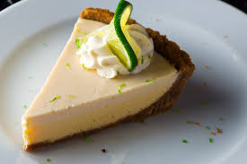

Home
Key Lime Pie

Description
A real sweet treat from Florida.
Ingredients
Crust
- 180g digestive biscuit crumbs
- 50g firmly packed brown sugar
- 110g butter, melted
Pie Filling
- 240ml double cream
- 100g granulated sugar
- 1 (350ml) tin sweetened condensed milk
- 180ml key lime juice
- 1 tbsp key lime zest
- 470ml single cream
- Fresh lime slices. for garnish
Steps
- Preheat oven to 180C/Gas mark 4.
-
In a medium bowl, combine digestive biscuit crumbs and brown sugar. Stir
in melted butter. Press the mixture firmly into bottom and up sides of a
25cm spring form pan. Bake for 8 minutes and let the crust cool
completely before spreading the pie filling over it.
-
In a large bowl, with an electric mixer at medium speed, beat cream
until slightly thickened. Gradually add the sugar, beating until soft
peaks form. Add condensed milk and beat until stiff peaks form. Beat in
lime juice, lime zest, and single cream. Once the mixture as reached
desired flavor and consistency, gently spread pie filling over cooled
crust. Cover and freeze for 4 to 6 hours or until firm.
- Cut into wedges and garnish with fresh lime slices, serve cold.